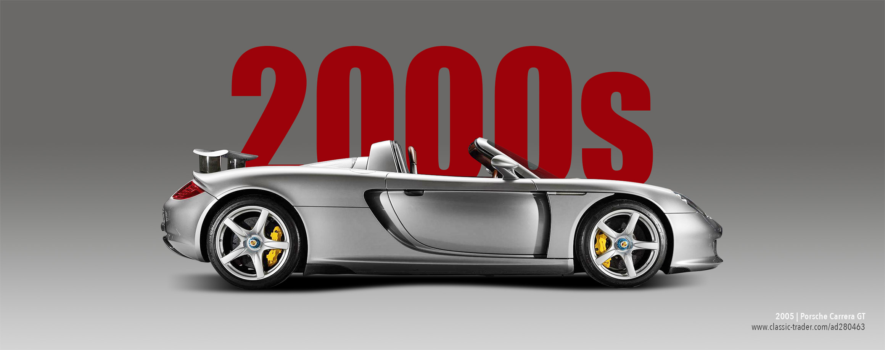

Portrait Of The Workshop
With the purchase of a classic car, the passion for the old metal really begins. When the keys are handed over, quite a few buyers have to ask themselves where and how their new treasure can best be maintained and, if necessary, repaired. Christian-Oscar Geyer, managing director of C.O.G. Classics in Düsseldorf, was regularly asked for tips on whether he knew experts for the W123 Mercedes-Benz, Alfa Romeo boxer engines or British roadsters. Because of that, in 2018 he made the decision that his company should also offer a suitable specialist workshop in addition to selling the vehicles.
The glass workshop was thus created directly next to the showroom, where the vehicles are given the best possible service. Nikolaos Grammatikopoulos is a master mechanic and, as workshop manager in the C.O.G workshop, responsible for the all-round care of the vehicles. The services offered begin with professional vehicle preparation – both the reconditioning or revitalisation of the paintwork and the cleaning of the interior. Grammatikopoulos and his team are also available when it comes to vehicle maintenance and service. From simple oil changes to cavity sealing, ice blasting of the underbody to extensive bodywork and other repair work, almost all services are covered. It is particularly important to the master mechanic to take customers with him all the way. Together, the vehicle is inspected, competent advice is given and then the work to be done is determined.
Even though the Düsseldorf location has a lot of expertise and experience in the areas of bodywork, engine diagnostics and car glass, among others, the master mechanic knows when it is advisable to call in an external specialist. For these cases, he knows the right experts for individual specialist areas. So, for every service on the car, the C.O.G. master workshop is the right place to be. Of course, the main inspection and exhaust emission test can also be carried out in Düsseldorf, as can a simple tyre change or saddlery work. And even if you only need a parking space for the winter, C.O.G. is the right address, because the rental of winter quarters is also offered.
The history of C.O.G. Classics is closely interwoven with Managing Director Christian Oscar-Geyer’s first encounters and memories of cars in his childhood. According to his own recollections, Geyer always had something to do with cars: from an early age, his favourite toys were cars. He was particularly fond of the Matchbox suitcase – it even had to go on holiday with him. And the holiday destination in Tuscany was of course driven to in the family car, an Alfa Romeo Berlina 2000.
